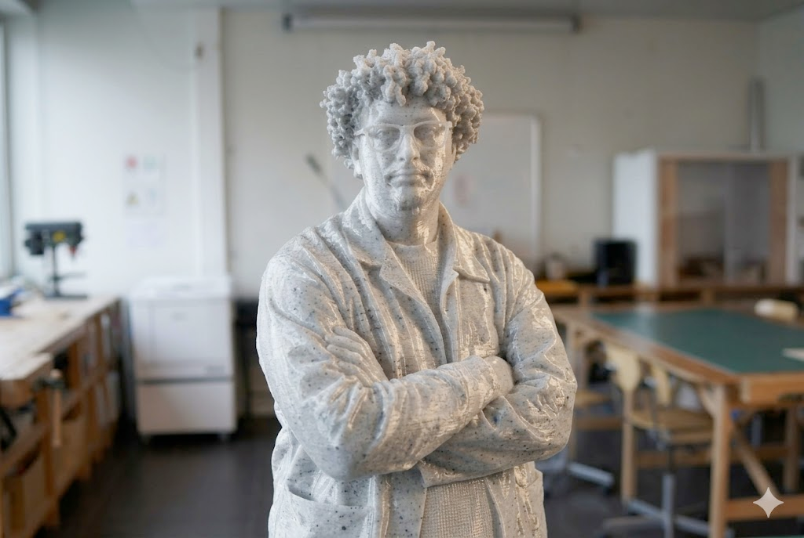
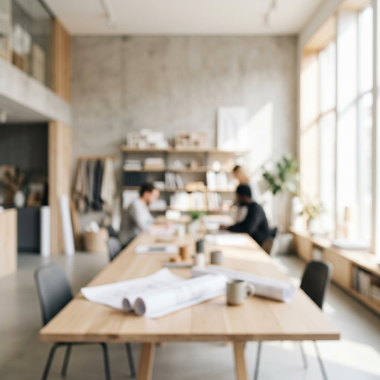
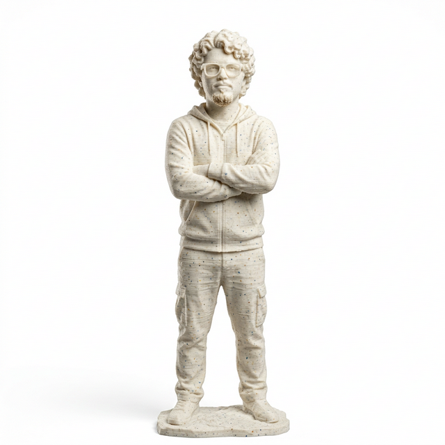

CONCEPT
POSTER SERIES
Exploring 3D volumes transposed onto 2D prints. This project focuses on the intersection of physical and digital spaces, capturing the fluid essence of organic shapes as they merge with strict geometric typography. By examining light, shadow, and materiality within virtual environments, the series creates a tangible sense of depth on a flat medium.
MORE ABOUT IT
WORKSHOP
ARCHIVES
A collection of experimental objects and physical computing prototypes created during the 2025 maker residency. Combining digital fabrication methods like CNC milling and 3D printing with traditional woodworking techniques, these artifacts bridge the gap between ancient craftsmanship and the interactive potential of modern technology.
MORE ABOUT IT
EVERYWHERE
AT HOME
Mental noise is hurting our minds — we are continually asking questions that create busyness, not knowledge. We are in 'reacting mode,' leaving no room for reflection. To regain perspective in life, you need to pause. This psychological art installation prompts the viewer to embrace stillness and reconnect with their inner clarity, visualizing silence as a protective layer against external chaos.
MORE ABOUT ITneat and tidy.
Looking for inspiration for your soul project? Search for images based on colors, image formats, etc. Our brain is continually exposed to internal and external stimuli. Silence feels impossible, like emptying our spirit.